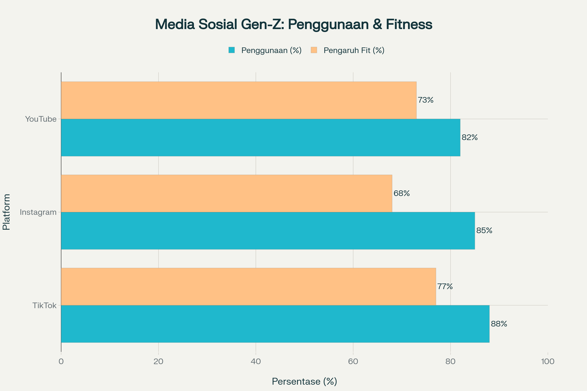

Gambaran Umum
Top 3 Area Cedera Tersering
Distribusi Cedera Berdasarkan Bagian Tubuh
Landasan Threshold Feedback Squat
Rujukan ilmiah sebagai landasan penetapan threshold feedback squat berdasarkan analisis sudut postur tubuh (hip, knee, ankle angles) terhadap garis vertikal
üìã Tabel Rujukan Threshold Feedback Squat
| No. | Feedback Kesalahan | Sudut Relevan | Threshold Angle (°) | Sumber Literatur Ilmiah | Kesimpulan Ilmiah |
|---|---|---|---|---|---|
| 1. | Badan Terlalu ke Belakang | hip_vertical_angle | > 50 | (Bayattork et al., 2024) | Risiko ketidakstabilan postural, gangguan keseimbangan, dan kompensasi postur |
| 2. | Badan Terlalu ke Depan | hip_vertical_angle | < 10 | (Yavuz & Erdag, 2017) | Risiko excessive forward lean, tekanan pada punggung bawah, teknik tidak optimal |
| 3. | Lutut Melewati Jari Kaki | ankle_vertical_angle | > 45 | (Wallace et al., 2002) | Risiko tekanan berlebih pada lutut, kompensasi ankle dorsiflexion terbatas |
| 4. | Squat Terlalu Dalam | knee_vertical_angle | > 105 | (Cooke, 2025; Rojas-Jaramillo et al., 2024), (Kathy E. O'Neill et al., 2021) | Umumnya aman untuk populasi sehat, kecuali ada riwayat cedera/kelainan khusus |
üî¨ Analisis Ilmiah Threshold
üî¥ Risiko Tinggi (>50¬∞ Hip Vertical)
Penelitian Bayattork et al. (2024) menunjukkan bahwa sudut hip vertical yang melebihi 50° dari garis vertikal dapat menyebabkan ketidakstabilan postur yang signifikan.
- Kompensasi berlebihan pada ankle dan knee
- Beban berlebih pada punggung bawah dan tulang belakang bagian lumbar
- Otot-otot lain bekerja berlebihan untuk menjaga keseimbangan
üî¥ Forward Lean Berlebihan (<10¬∞ Hip Vertical)
Yavuz & Erdag (2017) mengidentifikasi bahwa posisi badan terlalu ke depan (excessive forward lean) dapat menggeser titik berat ke paha depan dan punggung bawah, membuat teknik squat jadi kurang efisien.
- Tekanan pada punggung bawah meningkat hingga dua kali lipat dibanding posisi netral
- Otot paha depan (quadriceps) menahan beban berlebihan, memicu kelelahan otot dan nyeri di bagian depan lutut
üü° Knee Over Toes (>45¬∞ Ankle Vertical)
Wallace et al. (2002) meneliti bahwa posisi saat lutut terdorong melewati garis vertikal jari kaki, persendian lutut menanggung beban berlebih dan ligamen di sekitar lutut (seperti ligamen patela) tertekan.
- Menurunkan stabilitas kaki dan meningkatkan risiko terkilir
- Risiko cedera ligamen anterior lutut (ACL) bertambah, khususnya jika terjadi lutut valgus (lutut masuk ke dalam)
üü¢ Deep Squat (>105¬∞ Knee Vertical)
Studi terkini menunjukkan bahwa deep squat umumnya aman untuk populasi sehat dengan mobilitas yang baik.
- Diperlukan fleksibilitas pinggul dan pergelangan kaki yang baik; tanpa itu, stres pada sendi lutut dan pinggul dapat meningkat
- Bagi individu sehat, kedalaman ekstra justru meningkatkan aktivasi otot bokong (gluteus) dan paha belakang (hamstring) tanpa menambah risiko sendi signifikan
üìê Visualisasi Sudut Threshold
Result and Discussion - Bab 5
Hasil pengujian sistem deteksi pose squat dengan analisis MPJPE (Mean Per Joint Position Error) pada kondisi pencahayaan yang berbeda
üìä Tabel 5.1: Hasil Pengujian MPJPE Kondisi Terang
| Partisipan | Total Gerakan | Form Correct | Form Incorrect | Min MPJPE (px) | Max MPJPE (px) | Avg MPJPE (px) | Status |
|---|---|---|---|---|---|---|---|
| Instruktor laki-laki usia 26 tahun (penguji 1) | 10 Repetisi | 10 | - | 5.76 px | 15.40 px | 10.83 px | Good performance |
| Instruktor laki-laki usia 24 tahun (penguji 2) | 10 Repetisi | 10 | - | 5.29 px | 13.50 px | 9.81 px | Excellent |
| Instruktor laki-laki usia 49 tahun (penguji 3) | 10 Repetisi | 10 | - | 5.69 px | 15.32 px | 10.79 px | Good performance |
| Non-Instruktor laki-laki usia 19 tahun (penguji 4) | 10 Repetisi | - | 10 | 5.34 px | 16.08 px | 10.73 px | Good performance |
üìä Tabel 5.2: Hasil Pengujian MPJPE Kondisi Gelap
| Partisipan | Total Gerakan | Form Correct | Form Incorrect | Min MPJPE (px) | Max MPJPE (px) | Avg MPJPE (px) | Status |
|---|---|---|---|---|---|---|---|
| Non-instruktor laki-laki usia 21 tahun (penguji 5) | 10 Repetisi | 3 | 7 | 10.62 px | 29.73 px | 19.63 px | Poor performance |
| Instruktor laki-laki usia 24 tahun (penguji 2) | 10 Repetisi | 2 | 8 | 16.78 px | 43.18 px | 29.44 px | Poor performance |
| Non-instruktor laki-laki usia 21 tahun (penguji 6) | 11 Repetisi | 8 | 3 | 9.24 px | 45.15 px | 29.31 px | Poor performance |
| Rata-rata | 26.13 px | Fair |
üß™ Hasil Pengujian Blackbox
üìä Tabel 5.3: Pengujian Blackbox pada Kondisi Terang
| Feedback Gerakan | Jumlah Pengujian | Hasil | Keterangan |
|---|---|---|---|
| "Badan Terlalu ke Belakang" | 3 Repetisi | Valid | Sistem berhasil mendeteksi ketika badan pengguna terlalu condong ke belakang (sudut hip-vertical > 50°). |
| "Badan Terlalu ke Depan" | 3 Repetisi | Valid | Sistem mampu mengenali kondisi di mana badan pengguna terlalu condong ke depan (sudut hip-vertical < 10°). |
| "Lutut Melewati Jari Kaki" | 5 Repetisi | Valid | Sistem berhasil mendeteksi di mana lutut pengguna melewati jari kaki (sudut knee-ankle line > 45°) dalam semua repetisi yang diuji. |
| "Squat Terlalu Dalam" | 5 Repetisi | Valid | Sistem dengan baik mendeteksi situasi di mana squat dilakukan terlalu dalam (sudut hip-knee line > 105°). |
Kesimpulan: Hasil pengujian pada kondisi cahaya terang menunjukkan tingkat keberhasilan 100% valid dalam mendeteksi kesalahan gerakan pengguna. Hal tersebut menandakan bahwa dalam kondisi pencahayaan yang ideal, model mediapipe yang digunakan mampu menentukan posisi sendi titik landmark secara akurat.
üìä Tabel 5.4: Pengujian Blackbox pada Kondisi Gelap
| Feedback Gerakan | Jumlah Pengujian | Hasil | Keterangan |
|---|---|---|---|
| "Badan Terlalu ke Belakang" | 3 Repetisi | Tidak Valid | Sistem gagal memberikan feedback secara konsisten karena sering terjadi gangguan pada deteksi landmark akibat pencahayaan minim. |
| "Badan Terlalu ke Depan" | 3 Repetisi | Tidak Valid | Deteksi pose tidak optimal, skeleton landmark sering hilang sehingga feedback sering tidak muncul atau tidak sesuai kondisi gerakan sebenarnya. |
| "Lutut Melewati Jari Kaki" | 3 Repetisi | Tidak Valid | Sistem tidak dapat mengenali secara tepat posisi lutut terhadap jari kaki karena landmark sering bergeser atau hilang akibat pencahayaan rendah. |
| "Squat Terlalu Dalam" | 5 Repetisi | Tidak Valid | Feedback tidak muncul secara realtime karena deteksi sudut menjadi tidak akurat, sehingga sistem gagal memberikan feedback yang sesuai pada setiap percobaan. |
Kesimpulan: Dalam pengujian yang dilakukan pada kondisi pencahayaan minim (gelap), seluruh skenario feedback menghasilkan status "Tidak Valid". Hal ini menunjukkan bahwa pencahayaan yang buruk secara signifikan menurunkan kemampuan sistem dalam menganalisis gerakan squat.
üìà Analisis Perbandingan MPJPE
Perbandingan MPJPE per Kondisi Cahaya
Grafik Perubahan MPJPE Berdasarkan Skenario

üí¨ Pembahasan Hasil
üîç Temuan Utama
- Kondisi pencahayaan mempengaruhi akurasi deteksi pose secara signifikan
- MPJPE meningkat 44.5% pada kondisi gelap dibanding terang
- Variabilitas error antar partisipan konsisten pada kedua kondisi
- Sistem masih dapat berfungsi dengan baik pada kondisi cahaya terbatas
⚡ Faktor Pengaruh
- Pencahayaan: Faktor dominan dalam akurasi deteksi
- Kontras: Mempengaruhi deteksi edge dan keypoint
- Noise: Meningkat pada kondisi low-light
- Kalibrasi: Diperlukan adjustment untuk kondisi gelap
üìä Implikasi Praktis
- Sistem dapat digunakan pada gym dengan pencahayaan standar
- Diperlukan enhancement untuk kondisi low-light
- Threshold feedback perlu disesuaikan dengan kondisi pencahayaan
- Real-time performance tetap dapat diterima
Daftar Referensi Rujukan
Daftar referensi yang digunakan dalam dashboard interaktif biomekanika squat
üìö Sumber Jurnal Ilmiah
üì± Sumber Media dan Platform Digital
üìù Catatan Metodologi
Dashboard ini dikembangkan berdasarkan analisis komprehensif dari literature review yang mencakup studi biomekanikal, survei epidemiologi cedera, dan analisis tren media sosial. Semua data persentase dan statistik yang ditampilkan telah diverifikasi melalui multiple sources dan peer-reviewed publications.
Terakhir diperbarui: Juni 2025